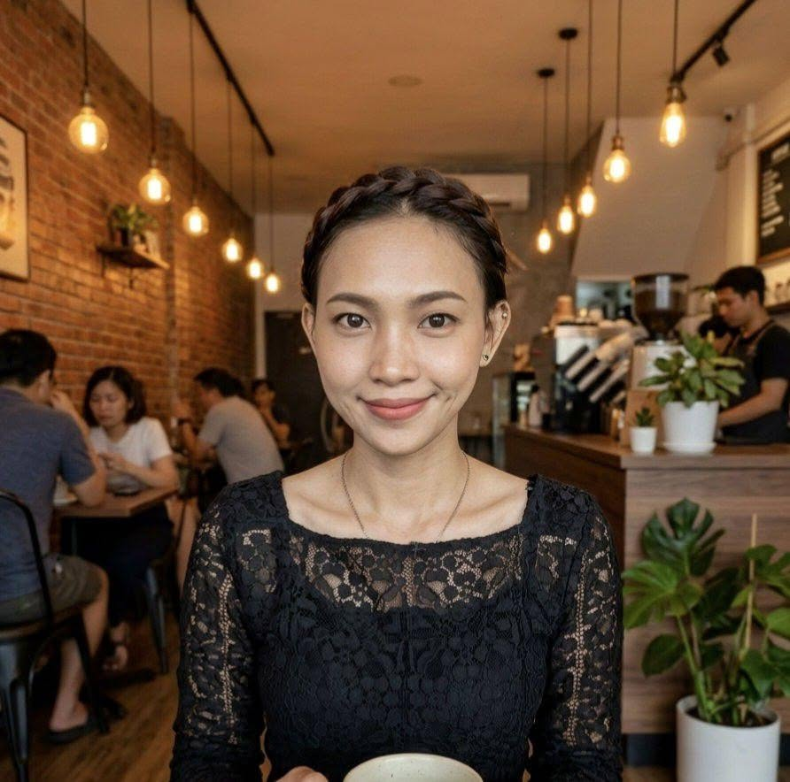

A Visual Journey · 2015 — 2026
Sketches, portraits and studies — over a decade of lines, shadows and stories on paper.

2015–2025 archives are being digitized. 2026 collection is live below.
Ederlyn Claud Sarmiento is an ICT teacher and self-taught artist who works mainly in ballpoint pen and pencil. Her art captures quiet portraits and everyday moments. This gallery traces her growth from 2015 to the present. When she is not in the classroom, she is drawing, painting, or mentoring young artists.
Visit My Main Profile →